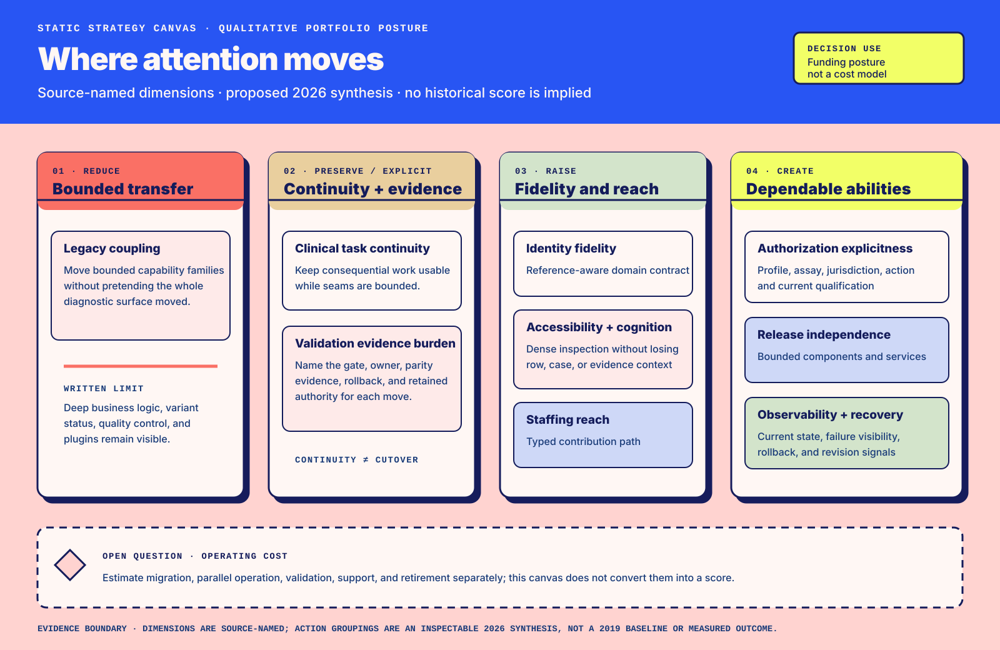
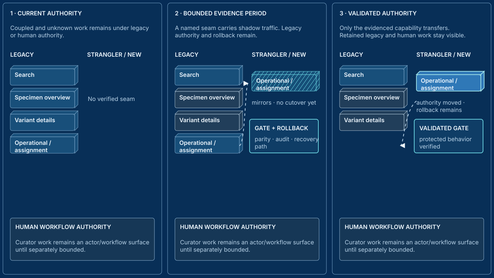
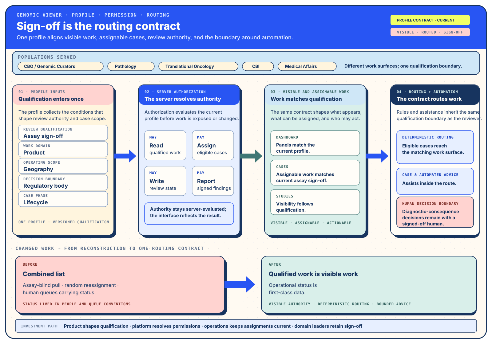
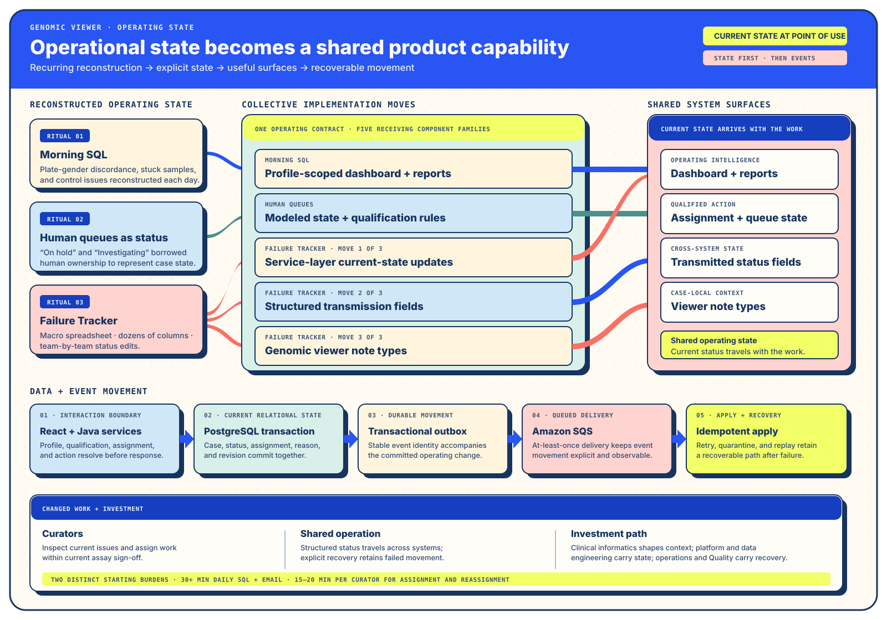

First responsible version
Profile, permission, assignment
Make qualified work visible, make actions explicit, and give later automation a reliable boundary.
Solution Architecture · Implementation Architecture · Q1 2019–Q1 2025
How profile-scoped work, visible evidence, and recoverable migration changed a genomic viewer
A researcher-built GWT viewer had become a consequential operating surface across clinical genomics. The team first documented and modeled its operating rules: who was qualified to act, which cases belonged in view, which states carried the work, and where evidence should appear. Dependable routing and automation could then use those explicit rules.
In a clinical-genomics platform program, I worked as Principal Product Designer and Software Engineer III to keep case assignment, evidence review, and sign-off moving during replatforming; the work established a partial strangler migration with consequential legacy areas still explicitly owned.
Evidence standing: The retrospective account establishes the reported partial migration and retained legacy scope. Costing, current technology choices, and AI-assisted delivery effects follow their own evidence routes.
Population context · Context Tree · Solution orientation
Curation, Pathology, computational biology, automation, Quality, engineering, and partner-facing groups each make a different decision about the same case from one operating surface. Use the group filters to compare the context each group needs, the scenario that reveals operational state held outside the viewer, and the architecture component that carries the resulting contract.
| Shared concern | Solution Architecture | Implementation Architecture | Enterprise consequence |
|---|---|---|---|
| Diagnostic surface | A research tool becomes operational infrastructure. | The stack defines who can contribute and how behavior is shared. | Re-platforming changes the operating model as well as the screens. |
| State contract | Queues, spreadsheets, and SQL rituals hold operational states outside the product. | Explicit permission and state models, service-layer current reads, and structured fields carry the state across boundaries. | Coordination relies on shared system state, reducing fragile local reconstruction. |
| Permission profile | Visible work and assignable work follow qualification. | A permission ledger, bounded table interactions, and contextual tools carry the rule. | Routing and automation can apply the same profile and permission rules. |
| Changed work | Point-of-use evidence removes the file hunt; search and dashboards replace clipped results and morning reconstruction. | Service updates, structured fields, and note types replace spreadsheet-carried state. | Operational intelligence becomes shared, current, and profile-scoped. |
| Reusable behavior | Participants learn to write specifications for the work they carry. | Tests, stories, components, and upstream revision keep that behavior executable. | New teams inherit described behavior instead of reconstructing colleague memory. |
Track I Solution Architecture · Population Context and Changed Work
The genomic viewer began as a research-built browser client and hardened into a mission-critical surface as acquisition, multi-protocol assays, methylation, longitudinal liquid biopsy, and automation expanded the work around it. Curators, Pathology, Translational Oncology, Computational Bioinformatics, and Medical Affairs depended on the viewer alongside IGV, LIMS/ELN, the analysis pipeline, and downstream transmission assets.1
Participation in a diagnostic pathway made the viewer consequential. The system's actual intended use, boundaries, and controls determine its classification. That distinction kept the architectural question useful: which work, decisions, and handoffs had become core operating elements, and which investment would let them change safely?
Human queues carried hidden operational states such as “on hold” and “investigating.” Curators reportedly spent fifteen to twenty minutes each morning assigning and reassigning work. A plate-wide issue could scatter cases across 70–100 people, turning Slack and email into the recovery layer. Okta authenticated people, while the product still needed a granular model for profile, assay, jurisdiction, and action.2
The same hidden-state pattern appeared elsewhere. Advanced Search hid valid results behind an unpaginated service limit. A correct sequencing address depended on a manually maintained German-team process. Morning SQL and a macro-based Failure Tracker recovered states the viewer could have carried directly.
Profiles and permissions became the First Responsible Version: the smallest surface able to align current sign-off, visible studies, assignable cases, and permitted actions. This converted an abstract re-platforming into an operating contract with explicit requirements that could support deterministic routing later.3
A strangler approach moved the operational and assignment layers first while reusing Java services. Values already present in the system moved to the point of use. High-impact improvements supported current work while the target architecture developed, and expensive system-wide interface concepts were retired when they weakened the migration.
What if we just showed it to you in the interface, so it’s unnecessary to even have to go find that file and open it up?
Participant-author account

| Action | Source-named dimensions | Decision meaning |
|---|---|---|
| Reduce | Legacy coupling | Move bounded capability families while retained legacy ownership stays visible. |
| Preserve / make explicit | Clinical task continuity; validation evidence burden | Keep consequential work usable and name the acceptance condition, evidence, rollback, and owner for each move. |
| Raise | Identity fidelity; accessibility and cognitive load; staffing reach | Increase reference fidelity, inspection support, and a typed contribution path. |
| Create | Authorization explicitness; release independence; observability and recovery | Establish dependable operating abilities the legacy surface left implicit or coupled. |
| Open question | Operating cost | Estimate migration, parallel operation, validation, support, and retirement separately. |
I report that profile administration removed recurring assignment-error modes and enabled deeper routing and automation. Advanced Search spread across business units with little internal promotion. Direct users' emotional response to working versions and quiet adoption are qualitative signals of fit; usage breadth and causal magnitude remain attributed to the source account.4
The practical change was visible in ordinary work: morning reconstruction moved into configurable surfaces, search reached across organizational boundaries, and profile-scoped panels carried current operational issues. The delivered work established a bounded capability family, while the larger “app store” vision remained future work.
The transferable result was a method, rather than a copy of the FMI system. Role-local context, an Impact Map, profile-first decomposition, scenario-shaped specifications, and visible operational state made the work easier for participating units to examine together. The same Core Architectures had already supported the FMI LIMS/ELN re-platforming, giving the portability claim a second, materially different receiving surface. People began writing specifications for the behavior they carried.5
Track II Implementation Architecture · State, Authority, and Recovery
The legacy client compiled Java into browser code through GWT. React, TypeScript, MUI's data grid, and Storybook offered a more familiar contribution path for engineers whose primary experience was in backend systems. The hybrid Product Designer and Software Engineer role built the visual system, core tables, forms, modes, super-header, and component library; the wider engineering group extended the same component foundation.6
That staffing consequence made the stack a collaboration architecture. Runnable component states connected design, implementation, onboarding, and testing. A technical choice determined who could safely make changes and how quickly the organization could absorb new contributors.
My contemporary interpretation is that generative AI widens the consequence of that choice. A new contributor may now shape a component family or connected code area in one collaboration cycle. Typed contribution paths, runnable states, tests, review capacity, and clear ownership determine whether that reach becomes safe participation. Current research describes both gains and slowdowns across different settings; this historical account establishes the collaboration architecture, while local delivery evidence establishes the effect of AI-assisted work.
The stack an organization uses, develops and maintains dictates who they can hire.
Implementation Architecture source
JSNI placed raw JavaScript inside Java, and gwt-react provided a historically useful but fragile bridge.
Lifecycle, validation, DTO handling, payload size, and paint cost accumulated at the interoperability boundary. The Masonry concept
was widely loved, yet its global mounting and validation demands weakened the migration.7

A typed update boundary can keep an omitted field, an explicit clear, an intentionally empty object, and meaningful falsy values distinct before JSON serialization. My historical account supplies the organizational and interop context; this independently authored, company-neutral Registry artifact supplies a later runnable mechanism with its own source, tests, and version. Inspect typed absence and wire shape in TypeScript.
The exploding-table modal kept the dense row scan intact while moving assembly-aware variant detail into a focused interaction. A permission ledger bound profile, assay, product, geography, jurisdiction, lifecycle, and action. The Floating Drawer made references and actions available across tabs without duplicating each capability.8
Sample collaboration moved beside the sample record, reducing per-sample Slack channels and ServiceNow tickets. Case & Automated Advice replaced the Failure Tracker with match criteria, history, and recoverable state. These were distinct component moves, but they shared one architectural effect: evidence, action, and operating state arrived in the context where judgment occurred.

A profile-scoped dashboard surfaced plate-gender discordance, stuck samples, and control issues. Three implementation changes reduced reliance on the Failure Tracker and overloaded queues: service-layer updates for current reads, structured fields on downstream transmission assets, and first-class note types in the viewer.9
A thirty-plus-minute daily SQL-and-email ritual was retired according to the portfolio account. That figure describes morning operating intelligence; it remains distinct from the fifteen-to-twenty-minute assignment figure. Each reason to edit a cell gained an explicit system field or note type, making the tracker unnecessary.

Each architectural move enabled an ability and reduced or retired a named reconstruction task. The investment lines show the organizational work required to make that ability durable.
| Investment and capability | Prior work reduced or retired | Receiving populations | Changed ability | Material investment lines |
|---|---|---|---|---|
| Profile and permission ledger | Assay-blind self-assignment, random reassignment, and action rules inferred from authentication. | CBO / Genomic Curators; Pathology; managers. | Cases, reports, and actions follow current sign-off; routing applies shared authorization rules. | Development; security and privacy; quality work; training. |
| Configurable dashboard and reports | Morning SQL, emailed summaries, and manual exception searches. | Curators; Pathology; adjacent operational units. | Plate-gender discordance, stuck samples, and control issues become current and profile-scoped. | Development; integration; observability; support. |
| Structured status, transmission fields, and note types | Human queues used as status and the macro-based Failure Tracker. | Downstream systems and teams maintaining shared status columns. | Operational state becomes first-class data and travels in structured form. | Integration; parallel operation; migration; schema stewardship; support. |
| Advanced Search | Clipped result sets and local cohort workarounds. | Business units including groups finding patients for partner trials. | One search surface becomes useful across organizational boundaries. | Development; integration; onboarding; support. |
| Typed components, stories, and tests | Relearning proprietary interface conventions and reconstructing behavior from colleagues. | Engineers, QA, incoming managers, and domain experts. | Reusable behavior becomes inspectable, testable, and easier to extend. | Component engineering; documentation; test design; continued maintenance. |
The same platform move changes different work for each population. This surface keeps each group's decision, receiving interface, and remaining responsibility together.
| Population | Prior work | Changed work | Receiving surface | Remaining responsibility |
|---|---|---|---|---|
| Curators / CBO | Self-assignment, SQL checks, file hunting, and Slack recovery. | Profile-scoped queues, dashboard triage, visible references, and in-case collaboration. | Profile arranger, dashboard, Floating Drawer, Collaboration. | Scientific judgment, sign-off, and consequential exception handling. |
| Pathology | Open cases individually and reconcile evidence across views. | Read consistent identity, actionable variants, and QC state; reach IGV and COSMIC in context. | Super-header, Summary and Digest, high-contrast mode. | Diagnostic-consequence decisions and current qualification. |
| Managers | Coordinate sign-offs, trainees, and review eligibility manually. | Batch-manage granular capability profiles. | Profile administration. | Keep qualifications and assignments current. |
| Client Services | Traverse several systems to answer status and hold questions. | Read a comprehensible case digest. | Summary and Digest. | Carry customer context and route scientific questions appropriately. |
| QA and incoming managers | Reconstruct expected behavior from people and scattered documentation. | Extend scenarios that also serve as tests and component states. | Specification-by-Example suite and Storybook. | Revise the upstream behavior when operating learning changes it. |
| Engineers | Learn proprietary UI conventions before contributing. | Enter through typed components, runnable stories, and shared test contracts. | Component library and verification portfolio. | Preserve integration continuity and keep each retired integration boundary explicit. |
| Sponsors and operations | Receive private emailed morning summaries. | Inspect shared, profile-scoped operating intelligence. | Operations dashboard. | Fund remaining capability transfer and operational support. |
The engagement moved one capability family cleanly and revealed the rest of the operating system while keeping its remaining ownership visible.
Read The Queue That Was Secretly a Status Machine for a debrief on how operational understanding, authorization, evidence, and incremental migration kept clinical work moving.
Historical observations, time effects, adoption breadth, and reported error reduction remain attributed to the participant-authored sources. Current technical companions clarify portable implementation patterns; they do not recast later reference work as historical delivery.